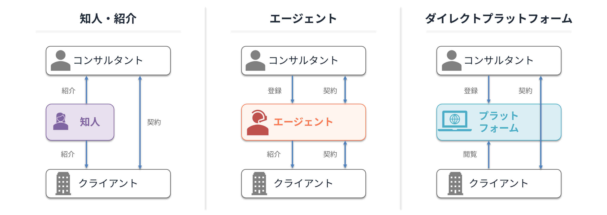

フリーランスコンサルタントになるには｜独立の準備から案件獲得まで
コンサルティングファームや事業会社で経験を積んだ後、フリーランスとして独立する選択肢が広がっています。報酬の最大化、稼働の自由度、特定テーマへの集中など、独立の動機はさまざまですが、実際に独立した後に「案件が安定しない」「手取りが想定より低い」「キャリアが停滞する」という壁に直面するケースも少なくありません。
独立の実務準備（開業届・契約書・会計）自体は、AIツールの普及によってかつてより大幅にハードルが下がっています。法人化も売上規模に応じて後から検討すれば十分です。本記事では実務準備の話には深入りせず（詳細は記事末尾のよくある質問を参照）、独立後に直面する課題と、それを乗り越える案件獲得チャネルに焦点を当てます。
独立後に直面する3つの壁
独立してすぐに安定した稼働ができるとは限りません。多くのフリーランスコンサルタントが直面する課題を整理します。
案件が安定しない
ファーム在籍時はアサインされるのを待っていれば案件が来ましたが、独立後は自分で案件を獲得する必要があります。営業ネットワークが限られている独立直後は、自分の適性や志向に合う案件になかなか出会えないのが現実です。前職の人脈だけでは案件の数も種類も限定されます。
特に独立直後の3〜6ヶ月は稼働率が安定しにくく、月によって収入が大きく変動することもあります。ファーム時代は「案件がない期間」でも給与が保障されていましたが、フリーランスでは稼働していない期間＝収入ゼロです。
報酬が想定より低い
「ファーム時代より稼げる」と思って独立したのに、実際に受け取る報酬が想定を下回るケースは珍しくありません。案件の獲得方法によっては、クライアントが支払う金額と自分が受け取る金額に大きな差が生まれることがあります。仲介者が間に入るほど中間マージンが発生し、多重下請け構造ではさらに受け取り額が下がります。
独立前に自分が実際に受け取れる金額で収入を試算すること、そして受け取り額を最大化できる案件獲得チャネルを選ぶことが重要です。
キャリアが停滞する
ファームに所属していれば、自分の経験外の領域のプロジェクトにアサインされることで、新しいスキルや知見を身につける機会があります。しかしフリーランスの場合、クライアントは「すでにその領域の経験がある人」を求めるため、どうしても過去にやったことの延長線上の案件に偏りがちです。
結果として、「PMO経験があるからPMO案件」「業務改善をやっていたから業務改善案件」と同じ領域を繰り返すことになり、コンサルタントとしてのスキルや市場価値が伸びないまま時間が過ぎるリスクがあります。フリーランスの強みであるはずの「自分でキャリアを選べる自由」が、案件の選び方次第で失われてしまうのは本末転倒です。
案件・顧客の探し方
これらの壁を乗り越えるために、案件の獲得チャネルを理解し、使い分けることが重要です。大きく分けて3つの方法があります。

知人・紹介
前職の同僚、過去のクライアント、業界の知人からの紹介です。信頼関係がベースにあるため成約しやすく、直接契約になることが多いためマージンも発生しません。
ただし、人脈の範囲に候補が限られるため、これだけに頼ると案件の安定性に欠けます。独立初期に人脈が薄い場合はなおさらです。
エージェント
フリーランスコンサルタント向けのエージェントに登録し、紹介された案件を受ける方法です。営業を代行してくれるため、独立直後でも案件を確保しやすいのが最大の利点です。
一方で、報酬の20〜40%がマージンとして発生し、継続契約でも同率で控除され続けます。
また、エージェントが紹介する案件の中からしか選べないため、自分の志向に合わない案件を受けざるを得ないこともあります。
ダイレクトプラットフォーム
プロフィールを登録し、クライアント企業から直接オファーを受ける方法です。仲介手数料が発生しないため報酬がそのまま自分の受け取りになります。また、全案件が公開されており自ら応募することもできるため、エージェントの紹介を待つ必要がありません。
コンサルタント側は登録から利用まで無料となるサービスが多く、コストをかけずに案件獲得チャネルを増やせます。クライアントとの直接対話で認識のズレが起きにくく、条件が合えば最短即日で稼働を開始できるスピード感も特徴です。
人脈に頼らず、マージンも発生しません。全案件が公開されているため、経験済みの領域だけでなく挑戦したい領域の案件にも自分から応募できます。独立後の3つの壁（案件の不安定、報酬の目減り、キャリアの停滞）に対して最もバランスの取れたチャネルです。
| 知人・紹介 | エージェント | ダイレクトプラットフォーム | |
|---|---|---|---|
| 案件の安定性 | △ 人脈次第 | ◎ 紹介が続く限り安定 | ◎ 公開案件＋スカウトで安定しやすい |
| 案件の選択肢 | △ 人脈の範囲に限定。領域も偏りやすい | ○ エージェントの紹介に限定。得意領域に偏りやすい | ◎ 全案件公開。領域を自分で選んで応募できる |
| 報酬 | ◎ マージンなし | △ 20〜40%がマージンとして控除 | ◎ 仲介手数料なし |
| 利用コスト | ◎ なし | ○ なし（マージンで回収） | ◎ コンサルタント側は原則無料 |
ダイレクトプラットフォームでコンサルタント側が無料な理由は、収益源をクライアント企業側に置くビジネスモデル設計と、コンサルタントが複数チャネルに並行登録するのが一般的という市場構造に由来します。詳細は記事「フリーランスコンサルタントの直接契約とは」で整理しています。
ダイレクトプラットフォームの多くはコンサルタント側の利用が無料で、全案件が公開されているため、独立初期から登録しておくことで案件の選択肢を最大化できます。知人・紹介やエージェントと併用しながら、自分に合ったチャネルの比率を見極めていくのが合理的です。
報酬の相場観については以下の記事で詳しく整理しています。
直接契約の仕組みやエージェントとの違いについてはこちらをご覧ください。
よくある質問
フリーランスコンサルタントとして独立する最適なタイミングはいつですか？
明確な正解はありませんが、目安として「特定領域で再現可能な成果を3〜5件持っている」「独立後6ヶ月分の生活費を確保している」「案件獲得チャネルが少なくとも1つ確立している」の3つが揃うと、リスクを抑えて移行しやすくなります。ファームでマネージャー以上を経験しているケースが多い傾向にあります。
独立直後の案件獲得はどのチャネルから始めるべきですか？
独立初期はエージェントとダイレクトプラットフォームの併用が現実的です。エージェントは独立直後でも案件を確保しやすい一方、マージン20〜40%が発生します。ダイレクトプラットフォームはマージンなしで利用でき、両方並行登録することでリスク分散と手取り最大化を両立できます。
独立にあたって法人化（マイクロ法人設立）は必要ですか？
初年度から必須ではありません。個人事業主として開業届を出すだけで業務委託契約は可能です。売上が一定規模（年間1,000万円超を目安）に達してから、節税やクライアント要件への対応として法人化を検討すれば十分です。
実務的な準備（開業届・契約書・会計）は自分でできますか？
現在はAIツールの活用で大半を自分で完結できます。開業届や業務委託契約書はAIで下書きを作成し専門家にレビュー依頼するだけで済みます。会計はfreeeやマネーフォワード等のAI搭載ソフトが自動仕訳に対応しており、簿記の知識がなくても確定申告まで完結可能です。
まとめ
- 独立の実務準備はAIツールで大半を効率化でき、ハードルはかつてより大幅に下がっています
- 独立後は案件の不安定・単価の低下・キャリアの停滞という3つの壁に直面しやすいです
- 案件獲得のチャネルは知人・紹介、エージェント、ダイレクトプラットフォームの3つ。併用しながら直接契約の比率を高めていくのが合理的です
- ダイレクトプラットフォームは仲介手数料なし・全案件公開・コンサルタント無料で利用できるものもあり、独立初期から登録しておく価値があります